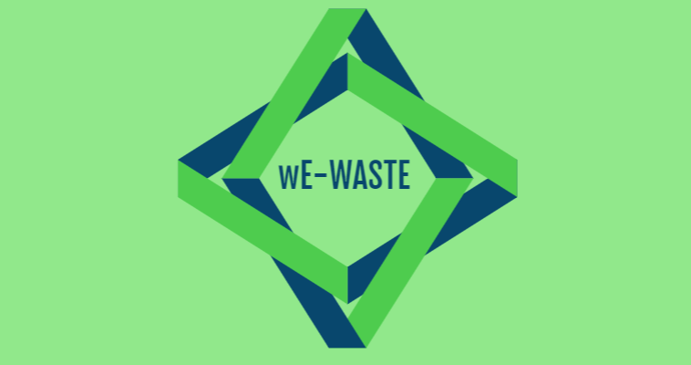

wE-WASTE:

it's time to stop
References:
(information, images, statistics, etc.)

- https://earth911.com/eco-tech/20-e-waste-facts/
- https://arstechnica.com/science/2017/12/just-20-percent-of-e-waste-is-being-recycled/
- https://image.freepik.com/free-photo/chimpanzee_42044-3329.jpg
- https://www.cnn.com/videos/world/2017/12/08/going-green-e-waste-pkg.cnn
- http://www.eterra.com.ng/articles/impacts-e-waste-environment/
- https://qz.com/331854/fyi-its-totally-fine-to-throw-away-most-batteries/
- https://ensia.com/wp-content/uploads/2018/02/Noteable_ewaste_main-760x378.jpg
- https://gordonchang90.wordpress.com/2015/03/09/geography-5-blog-post-environmental-injustice-in-guiyu-china/
- https://www.hindustantimes.com/mumbai-news/e-waste-concentration-in-indian-soil-is-twice-the-global-average-claims-study/story-qfO46MATcFDzb5b1pELL9O.html
- https://www.headspace.com/
- https://www.unsplash.com/
- http://www.theworldcounts.com/stories/Electronic-Waste-Facts
- https://www.dosomething.org/us/facts/11-facts-about-e-waste